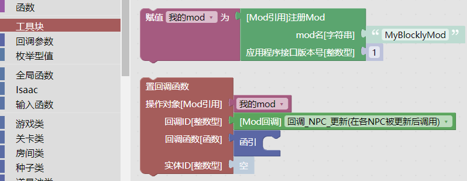
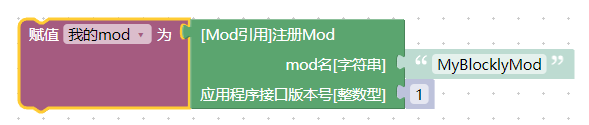
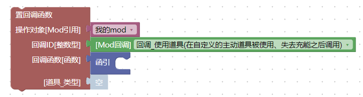
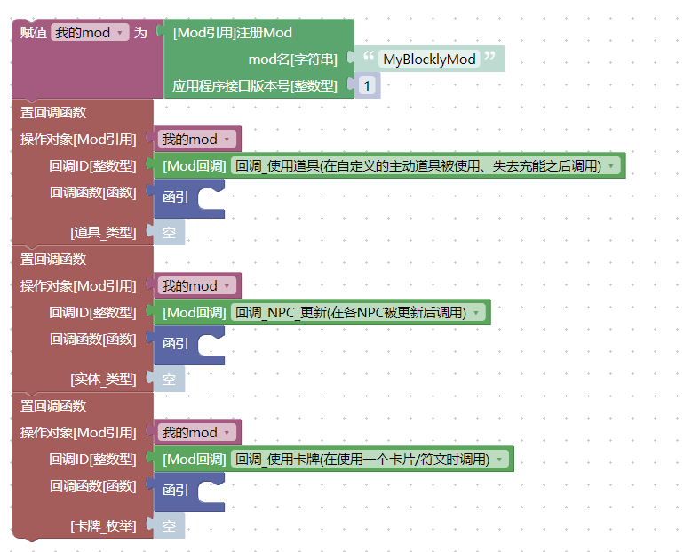
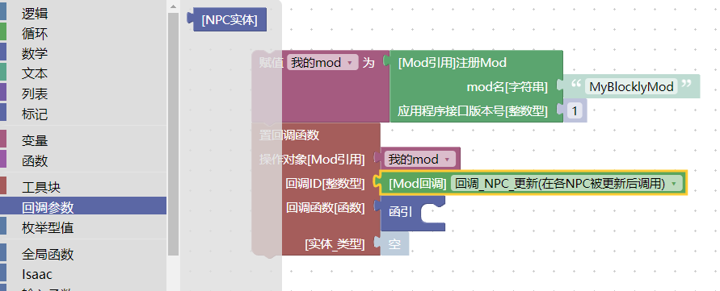
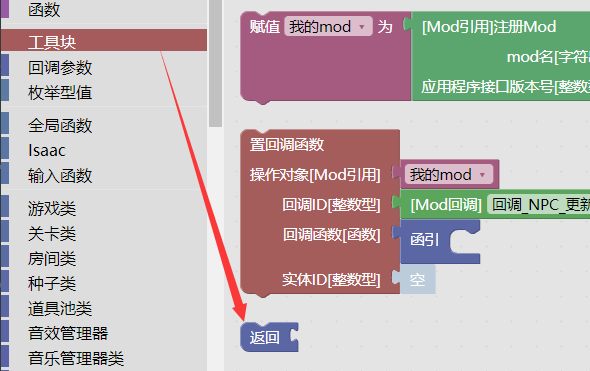
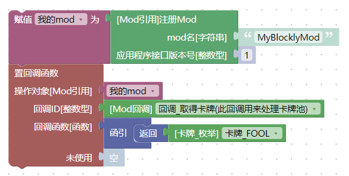
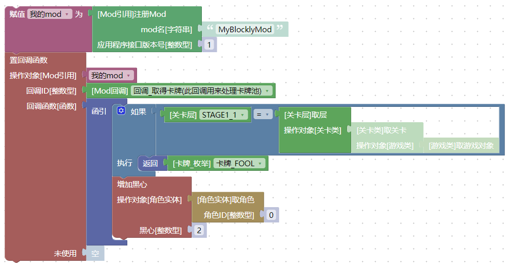

游戏流程与回调积木
回调积木用来告知游戏在特定的时刻执行某一段程序。
游戏的运行机制
在大多数情况下，游戏的核心逻辑以单线程的方式在运作。这也就是说，游戏在同一时刻只会做一件事情。 如果感兴趣的话，我们可以通过这张回调图来了解游戏的一个大致运行流程（该图片译自IsaacDoc文档）。
{kind=link}
{kind=link}
注册一个回调
我们可以通过注册回调的方式来告知游戏在某一时刻执行一段程序，同时还可以得到一些在这一时刻的相关游戏信息，以及向游戏提供一些信息来决定游戏的行为。
工具块中，提供了两个预先搭建好的积木，用来帮助我们注册回调：

注册一个mod
工具块中的注册Mod积木告知游戏我们当前的mod名字。只有先放置这个积木，才能够去注册回调函数，完成后续操作。

它有两个参数：
mod名告知游戏我们的mod名字是什么。为了避免bug，尽量不要用中文名字。应用程序接口版本号写1就可以，可不用关心细节。
应用程序接口版本号
应用程序接口版本号指的是游戏的mod系统接口的版本号，这个参数是用来做兼容支持的。换句话说，这里的数字表示我们的mod是写给哪一个版本的游戏的，目前只有1，不要填写其它数字。我原本以为忏悔的mod会把这个数字改成2的，这样游戏就能通过这个数字来区分mod适用的游戏版本，但官方并没有这样做，这就表示，官方认为忏悔的mod和胎衣+的mod在行为上没有不同，即游戏不会去主动兼容mod（而是反过来，mod需要去判断游戏的版本来兼容游戏）。
不论后续有多少个回调参数，一个mod只应该出现一个注册Mod的积木，且这个积木只应该被执行一次。出现多个注册Mod或许也没有问题，但这不符合编程规范，有概率出现意想不到的Bug，不要这样做。
我们可以看到，它将一个Mod引用放到了一个叫做我的mod的变量上。关于变量的使用会在之后做介绍。
此外Mod引用还承担了mod数据存储的功能，这部分目前还没有做测试，相关使用方式会在后续过程中完善。
注册一个回调
我们可以在注册mod之后来设置回调函数。也就是使用置回调函数积木：

这个积木需要三个或者四个参数。
操作对象，就是我们之前注册的那一个mod，默认已经写好了，这里不用关心。回调ID，就是我们要在什么时候执行程序回调函数，就是要执行的那一个程序第四个参数，这个参数的类型和名字会随着回调ID来变化，含义也不一样
注册多个回调
可以通过多次摆放置回调函数积木来注册多个回调，这也是大多数mod做的事情。

请测试你的回调是否能够正常工作，比如因为游戏设计上的BUG，有些回调每个mod只能设置一次，有些回调一个mod设置了，另一个mod就无法再设置
回调参数
回调参数表示游戏在执行这个回调的时候，为我们提供的一些附加信息，当我们选中一个置回调函数的积木的时候，左侧的工具箱里就会出现对应的回调参数：

比如，上面的NPC实体就表示触发回调_NPC_更新的那一个NPC实体。
返回积木
我们可以使用返回积木来告知游戏一些特殊信息：

比如，取得卡牌的回调不但能让我们在游戏获取一张卡牌的时候执行一段程序，还可以改变游戏取得的卡牌的结果。下面的程序会将所有的取得卡牌的结果替换为卡牌_FOOL，也就是The Fool卡牌：

执行后，可以看到，游戏中只会生成The Fool卡牌（输入控制台指令spawn 5.300试试看吧）。
此外，返回积木会让当前正在执行的mod逻辑终止（就像它的形状那样，它的后面不能跟任何的积木）。
“返回”积木终止掉的是整个“函引”积木
返回终止掉的是整个函引积木的执行，所以下面的程序在第一层的时候并不会给角色增加黑心——因为一旦触发了如果的条件，导致返回被执行，那么整个函引都会直接中断，后续的增加黑心也就不会正常执行了：

上面的程序的效果是：在第一层，将所有的卡牌替换为The Fool，否则（在其它层），每生成一张卡牌，就给角色增加一颗黑心。
回调列表
下面详细介绍每一种回调的使用方式。
（先照搬IsaacDoc，重要得到例子之后会补充的）
回调_NPC_更新
在任意NPC更新之后会触发。
使用返回积木返回任意的值，都不会影响到后续的回调执行。
警告
当NPC正在播放Appear动画的时候不会触发。例如，在生成Gaper时，会在第1帧和第31帧及以后的帧触发。
回调_触发更新
在每次游戏更新的时候触发。
使用返回积木返回任意的值，都不会影响到后续的回调执行。
这个回调每秒触发30次，在游戏暂停时不会触发（比如弹出暂停菜单）。
回调_触发渲染
在每次游戏渲染时触发（每秒60次）。
使用返回积木返回任意的值，都不会影响到后续的回调执行。
强烈建议只用来做渲染。不推荐使用它来做一些低频事件或者刷新数值。
回调_使用道具
当使用自定义主动、失去充能后触发。
道具的随机数字生成器可以用作事件种子。
使用返回积木返回一个真，就会播放“使用道具”动画，返回一个假，不会播放动画。
使用返回积木返回一个任意的值，都不会影响到后续的回调执行。
如果返回一个复合数据，还可以指定更多的结果（暂不支持）。
回调_触发角色效果更新
每一帧、每一个角色在计算完毕固定的道具效果后会触发。
使用返回积木返回一个任意的值，都不会影响到后续的回调执行。
回调_使用卡牌
当使用卡牌/符文时触发。
使用返回积木返回一个任意的值，都不会影响到后续的回调执行。
回调_跟班_更新
每一帧、每一个跟班都会触发。
使用返回积木返回一个任意的值，都不会影响到后续的回调执行。
回调_跟班初始化
当一个跟班刚刚初始化时调用。
使用返回积木返回一个任意的值，都不会影响到后续的回调执行。
警告
被初始化的实体的数据是不完整的。只有位置、速度、生产者种类、生产者变体、生产者实体等是可用的。一些其他属性（比如效果属性或者眼泪标记）还没有设置。如果你想要修改这些值，请使用回调_触发角色效果更新然后在可用的第一帧检查这些属性。
回调_计算缓存
当某一角色的状态重新计算时触发，比如捡起一个道具、使用某个药丸或者手动触发某个角色实体的计算道具积木。
使用返回积木返回一个任意的值，都不会影响到后续的回调执行。
提示：使用此回调来根据自定义道具修改角色的状态、跟班、飞行、武器等。道具会通过items.xml中的缓存值来告知游戏它影响了哪些状态。这个回调需要遵循缓存标记正确设置角色的状态。其它道具对角色的状态影响会在此回调触发之前计算。
回调_触发角色初始化
在初始化一个角色实体的时候触发。
有一个可选的参数，可以用来指定角色或者2P宝宝（0表示正常角色，1表示2P宝宝）。
使用返回积木返回一个任意的值，都不会影响到后续的回调执行。
警告：被初始化的实体的数据是不完整的。只有位置、速度、生产者种类、生产者变体、生产者实体等是可用的。一些其他属性（比如效果属性或者眼泪标记）还没有设置。如果你想要修改这些值，请使用回调_触发角色效果更新然后在可用的第一帧检查这些属性。
回调_使用药丸
当使用药丸时触发。
使用返回积木返回一个任意的值，都不会影响到后续的回调执行。
回调_实体受到伤害
当受到新的伤害前触发。
如果实体拥有DAMAGE_COUNTDOWN标记，就会在特定的时间内忽略其它的拥有DAMAGE_COUNTDOWN标记的命中。
如果此伤害需要结算，使用返回积木返回一个真，或者不使用返回积木。
如果需要忽略此伤害，使用返回积木返回一个假。
如果当前的实体是一个角色实体，那么伤害量就是角色即将受到的半血伤害。否则，伤害量表示伤害点数。
Bug
如果执行了返回积木，后续其它（mod的回调_实体受到伤害）的回调就不会触发
回调_触发诅咒计算
诅咒是一个标记。在当前关卡应用了诅咒之后触发。使用返回积木返回新的诅咒标记。使用Isaac中的按名称取诅咒ID来取得一个诅咒ID。
如果使用返回积木返回一个数字，它会作为后续（其它mod的回调_触发诅咒计算）回调的诅咒类型来传播。
Bug
使用返回积木返回一个非数字的值，会导致游戏崩溃。
警告
当有多个mod的时候，最后一个触发的回调会胜出，覆盖掉前面的回调产生的诅咒值。
回调_输入行为
当游戏或者游戏实体想要得到一个输入的时候触发。
如果当前的读取操作并不是来源于一个实体的话，实体类是空值。
输入钩子可以用来判断当前的回调是通过输入函数中的是否动作被触发、是否动作被按下还是取动作键值中的哪一个触发的。
如果你不想要覆盖游戏的输入值，就不要使用返回积木。
如果是是否动作被触发或者是否动作被按下，就使用返回积木返回一个逻辑型的值（真或者假）。如果是取动作键值，就返回一个实数型的值，范围在0.0到1.0之间。
使用返回积木返回一个任意的值，都不会影响到后续的回调执行。
回调_关卡生成器
Bug
此回调目前不能正常工作，且永远不会触发。
（这是游戏的Bug，以撒的积木工程不背这个锅）
回调_触发游戏开始
当开始游戏时触发，是继续游戏的参数为真表示是从"continue"继续游戏，为假表示开始一局新的游戏。
此回调会在回调_触发新房间和回调_触发新关卡之后调用。
使用返回积木返回一个任意的值，都不会影响到后续的回调执行。
回调_触发游戏结束
当游戏结束画面出现、或者开始播放结局的时候触发。是否游戏结束为真表示角色死亡游戏结束，为假表示游戏胜利触发结局。
使用返回积木返回一个任意的值，都不会影响到后续的回调执行。
回调_即将游戏结束
当退出一轮游戏的时候触发。参数需要保存为真表示游戏会创建一个可以继续的存档，为假则表示游戏不会创建存档。当触发游戏结局时会触发两次此回调。
使用返回积木返回一个任意的值，都不会影响到后续的回调执行。
回调_触发新关卡
当传送到新的关卡或者层后触发。
在回调_触发新房间之后触发。
使用返回积木返回一个任意的值，都不会影响到后续的回调执行。
回调_触发新房间
进入任意房间后触发。
使用返回积木返回一个任意的值，都不会影响到后续的回调执行。
回调_取得卡牌
用来处理“卡牌池”。
由于所有卡牌的生成概率并非相等，请使用随机数字生成器来做出随机选择。
可以使用三个逻辑型的参数来过滤选择的结果。
如果需要替换掉生成的卡牌，请使用返回积木连接一个数字，并填写需要替换的卡牌ID。或者连接枚举型值 卡牌_枚举。
返回积木并不会改变后续回调的卡牌_枚举参数。
Bug
使用返回积木返回一个非数字的值会导致游戏崩溃。
警告
最后一个触发的回调会胜出，并覆盖其它回调返回的值。
回调_取得shader参数
返回一个包含自定义shader参数的复合数据。
当返回一个复合数据时，会跳过其它的回调。
回调_执行指令
当执行一条控制台指令的时候触发。
参数指令是控制台指令的第一个空格前的字符输入。
参数参数是指令的其它部分。
重要
游戏自带的控制台指令（比如spawn和debug）不会触发这个回调。
使用返回积木返回一个字符串，会将它打印到控制台上。
使用返回积木返回一个任意的值，都不会影响到后续的回调执行。
Bug
使用返回积木会导致游戏崩溃。
（剩下的写不动了，等我慢慢更新）